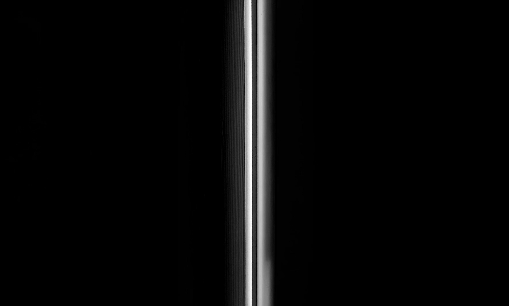

Projects

Curta-Metragem: Um Lugar
É um curta-metragem poético e introspectivo que apresenta o Tempo como narrador e consciência. Inspirado na abordagem contemplativa e reflexiva do documentário Caverna dos Sonhos Esquecidos, de Werner Herzog, o filme propõe uma experiência sensorial e meditativa sobre a passagem da vida e a relação da humanidade com aquilo que é inevitável, invisível e absoluto: o tempo.
Assistir Vídeo
Sites Desenvolvidos
Links dos meus projetos web anteriores.